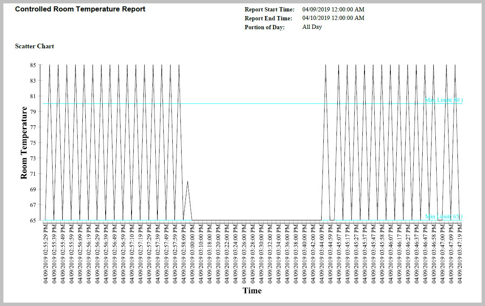
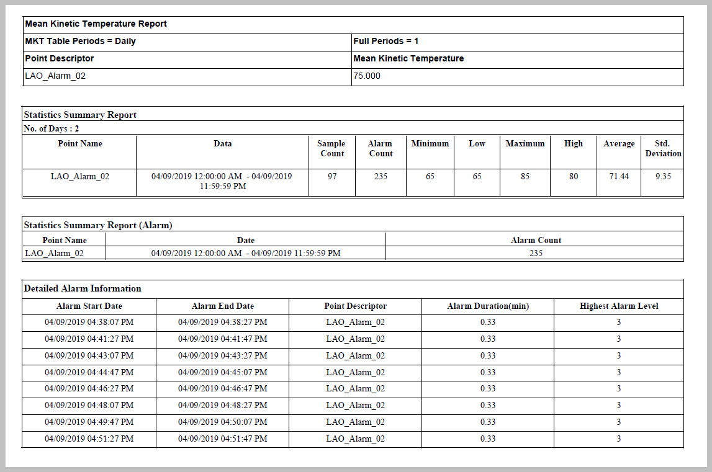
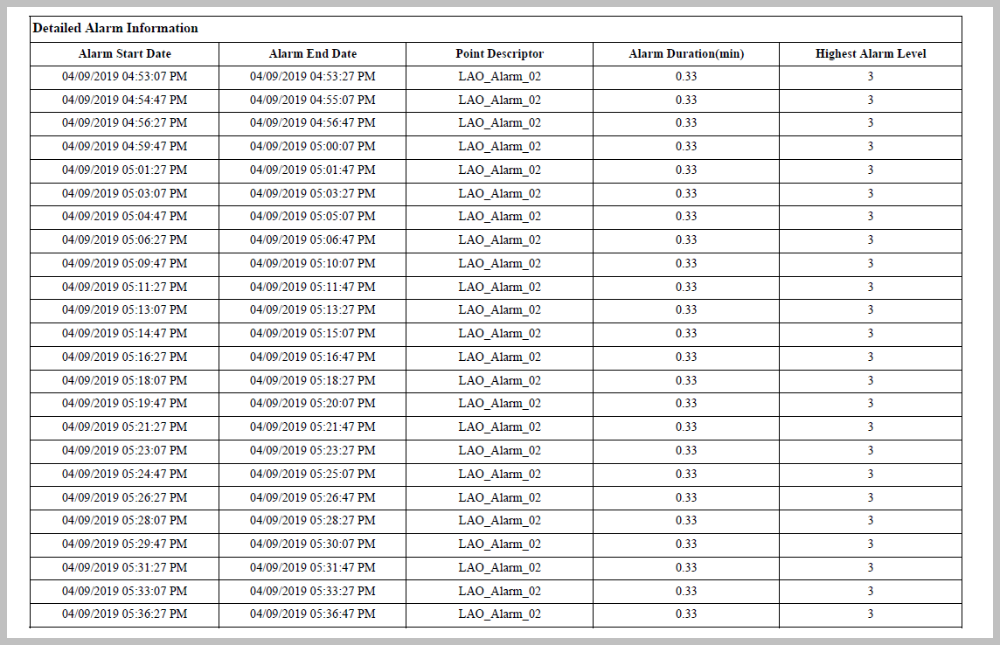
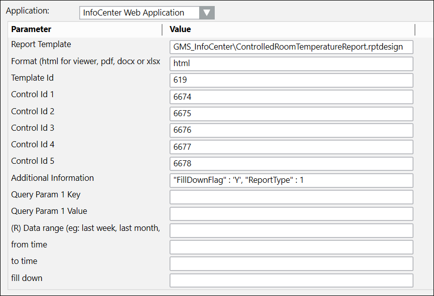

Controlled Room Temperature Report
Controlled Room Temperature Report
This report template is designed to display values and the results of corrective actions while monitoring the temperature in a controlled room. The report consolidates several reports into one: Statistics Summary Report for that point, Mean Kinetic Temperature Report, the Detailed Alarm Information, and the System Activity Summary Report.
Sample report



Sample parameters
Template and Control IDs will not be the same as the example below. These values vary depending on the user and on the details of the reports in the InfoCenter database.
